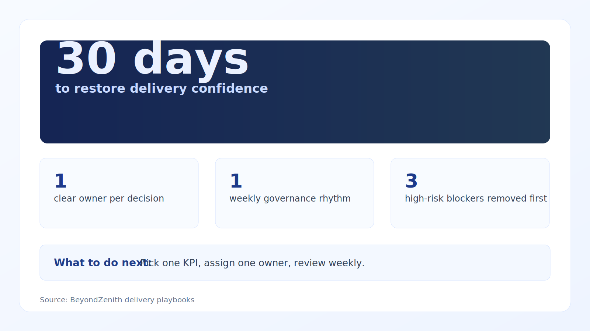

Most timeline failures are systems failures, not individual failures. Treat delivery as an operating system: priorities, dependencies, and decision latency.
Why delivery slips keep repeating
Updated with current benchmarks and practical implementation guidance for 10–100 person teams.
What is working now
- Timeline slips are increasingly linked to coordination and quality debt, not just effort estimation.
- AI accelerates output but can increase rework when used without quality gates.
- Leading indicators like blocked time and replan rate are replacing postmortem-only reporting.
Evidence and benchmarks
- 45% of professional developers say AI tools are poor at complex tasks (Stack Overflow, 2024). Source
- 43% feel positive about AI output accuracy; 31% are skeptical (Stack Overflow, 2024). Source
- 5.2B GitHub contributions in 2024 showing coordination pressure at scale. Source
- 59% YoY increase in GenAI project contributions (Octoverse, 2024). Source
Execution playbook (next 30 days)
- Track blocked-time ratio and replan rate weekly.
- Cap WIP and force explicit trade-offs between features and risk reduction.
- Add quality gates at integration boundaries to reduce downstream rework.

Data credibility note: Benchmarks are from reputable 2023–2026 sources where available; older baselines are included only when still industry-standard references.
Citations
Week 1: Diagnose
Map bottlenecks, decision delays, and dependency hotspots.
Week 2: Re-sequence
Reset roadmap ordering and assign explicit owners for every blocked item.
Week 3–4: Enforce
Run strict cadence and track cycle-time + predictability KPIs weekly.